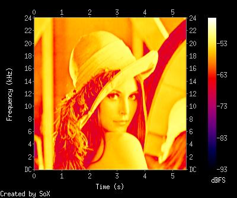

Spectrofy - image to audio converter
Spectrofy is a simple image to audio converter.
It converts input image to audio file with invoking:
$ spectrofy fft -f512 lena.bmp lena.wav
to this sound:
spectrogram of result looks like this:
